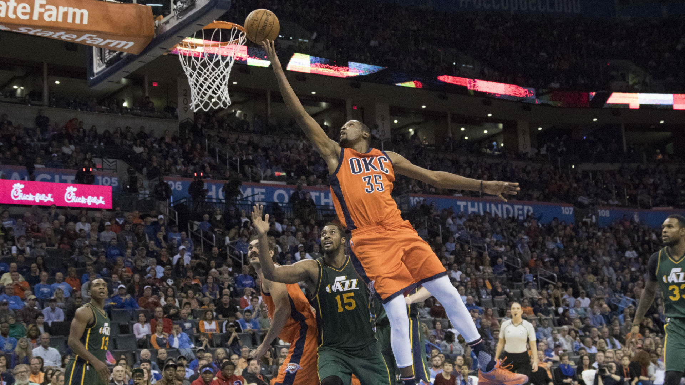
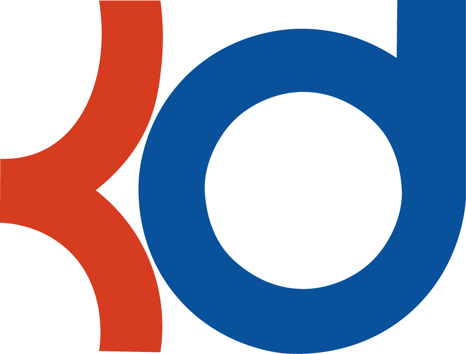

The Top-3 Contenders to Win
Super Bowl 51
by Dan Sheetz
3.28.16
1. The New England Patriots
Now I know what you're thinking, "Dan, we know that already, shut the hell up." I know you know but let me tell you why anyway. The Patriots came very close to winning the Super Bowl this past season, losing to an all-time great defensive team in a hard fought AFC championship. Since then a few things have happened: 1. the Pats lost their star DE Chandler Jones in a trade but replaced him with former 1st round pick Chris Long. 2. On offense, the Patriots improved dramatically. New England added receivers Chris Hogan and Nate Washington, TE Martellus Bennett, and RG Jonathan Cooper. Bennett was arguably the most important of this aquisitions as he will provide the team with the kind of deadly two tight end attacking sets that fans remember from a few years ago. 3. The AFC got easier. Mainly, the defending champion Denver Broncos lost both of their quarterbacks, Manning to retirement and Brock to the Texans, as well as key pieces on defense in Malik Jackson and Danny Trevethan.
2. The Green Bay Packers
A lot of people will disagree with me on this one. But I don't care. The key to a successful team is a great quarterback. Aaron Rodgers is a great quarterback. Not only that, Rodgers is surrounded by an extremely talented supporting cast featuring WRs Jordy Nelson (who was badly missed this past year due to a knee injury), Randall Cobb and Davante Adams. In addition to the receiver core, the Packers offense has newly acquired TE Jared Cook as well as some very talented RBs in Eddy Lacy and James Starks. On the defensive side, the Packers aren't elite but they are passable. Losing Casey Hayward in free agency didn't help but the team will look to the NFL Draft to patch holes in their secondary. Meanwhile, linebackers Julius Peppers and Clay Matthews are elite players. Beyond that, Green Bay has Sam Shields and Ha Ha Clinton-Dix leading the secondary and Nose Tackle BJ Raji holding things down on the defensive line.
3. The Arizona Cardinals
The Cardinals made it to the NFC Championship game last season before being blown out by a strong Carolina Panthers team. Quarterback Carson Palmer has the experience, talent and supporting cast necessary to lead his team to its first Super Bowl appearance since 2009. In the offseason, the Cards have acquired star DE Chandler Jones from the Patriots as well as DB Tyvon Branch to bolster what was already an elite NFL defense. The key for Arizona's offseason was actually just not losing any key players to other teams. Defensive back Rashad Johnson signed with the Titans however the Cardinals were deep in that area of the field with players like Tyrann Mathieu and Patrick Peterson.
The Top-3 Best and the Top-1 Worst
Players in the NBA
by Dan Sheetz
3.28.16
The Best
1. Steph Curry PG -- Golden State Warriors
This is obivous. Here's some stats, but it's obvious. Curry currently is scoring 30ppg, with a FG% of .506, a 3P% of .450, and .902 from the line. The 6' 3" guard also has also averaged 6.6apg and 5.4rpg with a player efficiency rating of 31.93 which, if the season ended today would make Steph's campaign the best season any player has ever had. Yeah, he's pretty good. If that isn't enough for you, Curry is also the best player on the Warriors, a team that is closing in on potentially having the best regular season record of any team all time (they're currently 66-7 with 9 games left). The reigning MVP is the best player in the game and will likely defend his title as the league's Most Valuable Player.
2. Russell Westbrook PG -- Oklahoma City Thunder
Westbrook is one of the NBA's only players that can truly dominate in athleticism. Russell destroys defenses with his never before seen combination of speed, strength, quickness, and energy. On top of that, the OKC point guard has made it clear that there are no players in the league that want to win as much as he does. Stats time. Who doesn't love stats time when they're talking about this guy? Westbrook is averaging an absolutely absurd statline. 23.7 points (8th best), 7.7 rebounds (1st for guards, next is James Harden with only 6.4), 10.4 assists (2nd best), and 2.05 steals (5th best) per game. It does not stop there. Russell's advanced stats are just stupid. His PER is 28.05 (3rd best) and his EWA is 21.7 (2nd best). This guy has drastically improved as well. His FG%, RPG and APG are all career highs. On top of that, Westbrook has 15 triple-doubles this season and counting which is the most by any player since Magic Johnson. He's a freak.
3. Kevin Durant SF -- Oklahoma City Thunder
I love Kevin Durant. He's by far my favorite player. But this is all fact. KD is the next best NBA pro. Durant, the best all-around scorer the league has seen, is averaging 28 points, 5 assists, and 8.3 rebounds per game. The OKC star is shooting .508 with a true shooting % of .634. Durant's PER is 28.18 which makes him the second best player in the league by that metric. A much-improved defender, the Slim Reaper (as he is sometimes known) dominates on both sides of the court. His 8.3rpg are a career-high and Durant EWA is 21.1, the third best mark in the league.
The Worst
1. Roy Hibbert C -- Los Angeles Lakers
This is a controversial pick, I know, but it's a fact nonetheless. Roy Hibbert sucks so freaking badly. When analyzing who the worst player in a sport is, you have to look at two things. How they're doing, and how they're supposed to be doing. Obviously Roy Hibbert is better than someone like Tayshaun Prince but Prince is 36 and making less than a million dollars. Hibbert is only 29 and makes almost 16 million. Anyway, here's why he is the league's worst player. Roy is 7-foot-2. That's very tall. He is averaging only 4.9 rebounds per game! You can't justify that stat while Kyle Lowry and his fat fucking face, who is 6-foot-nothing, is pulling down the same number of boards! But Hibbert isn't just bad relative to other players, he's bad relative to himself from a year ago. Roy's per-game averages in blocks, rebounds, and even points are all career lows. He sucks.
Kevin Durant:
The Official Review
by Dan Sheetz
3.28.16


Oh my god I fucking love Kevin Durant. He's the best all-round scorer the league has ever seen. But wait! There's more. This guy can also pass, rebound, play perimeter defense, defend at the rim, run the floor, handle the ball, play all 5 positions, and look cool doing it. KD is averaging 27.4 ppg in his career, the 3rd most of any player. Along with his ridiculous scoring numbers, Durant has grabbed 7.1rpg and dished 3.7apg during his NBA tenure. His career PER is 25, third highest among active players and he has won the coveted MVP award. What else do you want me to say? Oh, right. 5 stars.
Propadanda Sports
Top-3 Contenders to win
Super Bowl 51

Top-3 Best and WorstPlayers in the NBA
